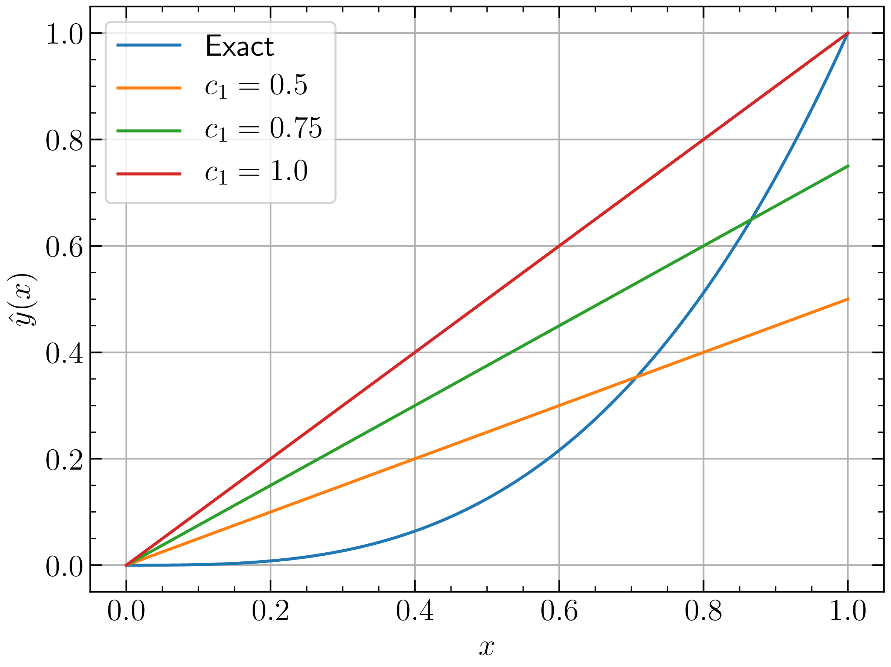

|
1Some background 1
2Approximate solution and domain residual 1
3Minimize residual 3
3.1Graphical representation of domain residual 3
3.2Method of weighted residuals 5
3.2.1Weighting function = 1 5
3.2.2Weighting function = \(x\) 5
3.2.3Generic approximation function 6
4Summary 7
In Finite Element Method, the discussion often leads to something called statement of weighted residuals. So let us explore what it means to me.
Let us say we have a differential equation given by eq (1) with boundary condition as \(y = 0\operatorname{at}x = 0\) and let us restrict ourselves to the domain \(x \in [0, 1]\).
Solution of this differential equation can be obtained very easily by integrating both sides and then eliminating the constant term using boundary condition. The analytical solution is given by eq (2).
We will be using this differential equation and referring to the analytical solution throughout this article.
Now lets just pretend that the differential equation given by eq (1) is either too complex to solve analytically or it has no analytical solution. So the only option left to us is to solve it using some numerical technique which should give us an approximation to the actual solution i.e. eq (2).
Before we proceed with the numerical solution, lets see what information do we have about the “unknown solution” which we want to find out.
The “unknown solution” should satisfy differential equation given by eq (1) at each point of the domain i.e. \(x \in [0, 1]\).
The “unknown solution” should satisfy the condition \(y = 0\operatorname{at}x = 0\).
For the sake of brevity, lets say the “unknown solution” is \(\hat{y} (x)\) which is an approximation to \(y (x)\). Of the two conditions above, second one seems easy to satisfy. Can we come up with some function \(\hat{y} (x)\) which has property \(\hat{y} = 0\) at \(x = 0\)? How about \(\hat{y} (x) = c_1 x\)? where \(c_1\) is an arbitrary constant? Does this function satisfy the first condition given above? Definitely not. But I still want to use the same function as an approximation to the analytical solution given by eq (2). There is an issue though, I do not have any idea about what should be the arbitrary constant \(c_1\). With change in \(c_1\), the function \(\hat{y} (x)\) also changes. So lets plot \(\hat{y} (x)\) for different values of \(c_1\) and on the same plot we will also show the analytical solution just for the sake of comparison.
 |
From the Figure 1, it is clear that none of the \(c_1\) values are giving us an approximation which satisfies condition 1. I can say this only because I have the exact solution with me. In reality, you will never have the exact solution to compare with. In fact, if you already have the exact solution, seeking approximate solution is stupidity. So lets continue with our stupidity.
As I dont know the exact solution I want to use \(c_1 x\) as our approximate solution. But what value of \(c_1\) should I choose which will keep \(\hat{y} (x)\) as “close” to actual solution as possible. How to decide which curve is better than all the other infinite choices? This is where we are going to use our first condition which states that the actual solution satisfies eq (1) at each point on the domain. However, we have an approximation \(\hat{y} (x)\) which does not satisfy the differential equation at every point in the domain. If we substitute \(\hat{y} (x)\) into the differential equation, what we get is error \(R_{\Omega}\). The error \(R_{\Omega} \)is often referred to as domain residual as this gives us the residual (i.e. error) at any point in the domain.
| \begin{eqnarray*} \dfrac{\mathrm{d} \hat{y} (x)}{\mathrm{d} x} - 3 x^2 & = & R_{\Omega} \end{eqnarray*} |
If we substitute \(x\) coordinate of any point in the domain, we will get error at that point due to approximation function \(\hat{y} (x) = c_1 x\). For ex: @ \(x = 0\), the domain residual is \(c_1\) and @ \(x = 1\) the domain residual is \(c_1 - 3\). One can also note that @ \(x = \sqrt{\dfrac{c_1}{3}}\), the domain residual vanishes.
We have seen that the approximation function introduces domain residual at each point on the domain. Also the domain residual varies from point to point and at some point it can also be zero. Ideally we want the domain residual to be zero at all points. But as that is not possible, lets do whatever best we can. Lets just have one more plot for varying value of \(c_1\). But this time instead of plotting the approximation function, lets plot the domain residual. We know \(R_{\Omega}\) is given by
One of the easiest ways to minimize this error is using “method of least squares”. This time even though we do not have exact solution, we do have domain residual which is equivalent to error. However, we will not discuss that here. We want to see method of weighted residuals in action to minimize this residual. But before minimizing it, lets try to visualize it in a graphical way.
We know that the exact solution is \(y (x) = x^3\). I can write the same expression as
Where \(a_0 = a_1 = a_2 = 0\) and \(a_3 = 1\). We will look at this expression just like we look at vectors. Lets say the function \(y (x)\) is composed of four basis functions, \(1, x, x^2 \text{ and } x^3\) weighted by \(a_0, a_1, a_2 \text{ and } a_3\) respectively. Note that the basis functions need not be orthogonal to each other. So lets just draw this (conceptually only). Let me emphasize that the below drawing is only for understanding. It is based on concepts of vector spaces which are applicable in function spaces as well. However we cannot draw the function spaces like this.
Figure 3 shows a conceptual visualization of domain residual. The function space contains four basis vectors \(1, x, x^2 \text{ and } x^3\). Each point in this function space represents a polynomial of degree \(3\). So in the same function space we can draw our exact solution \(y (x) = x^3\) and the domain residual \(R_{\Omega} = c_1 - 3 x^2\). We can take inner product of \(R_{\Omega}\) with each of the basis function to get its projection on that basis function. As we want \(R_{\Omega}\) to vanish, we will enforce each inner product to vanish. The inner product of two functions \(u (x) \text{ and } v (x)\) is given as
So the inner product of \(R_{\Omega}\) with four basis functions is given as
Each inner product is set to 0, which gives us four conditions. In this particular problem, our chosen approximation is linear and hence it has only one constant \(c_1\). Hence we do not need all the four conditions. Here we only need one condition. So we can pick any of the four conditions. I am goint to take two conditions and find out approximate solution in each case.
Finally we are here! Have a look at eqs (4 - 7). What is happening there? We have a domain residual term \(R_{\Omega}\). And instead of integrating that term over the domain, we are first “weighting” that term by one of our basis functions and then integrating over the domain. The final part is to set this integral to zero. This itself is nothing but “weighted residuals”. And obtaining the approximation using this is nothing but “Method of Weighted Residuals”. So lets just proceed with finding out a better approximation.
The weighted residual becomes
Set the residual to zero.
So the approximation function is \(\hat{y} (x) = x\).
The weighted residual statement is
This time the approximation is \(\hat{y} (x) = 1.5 x\).
So what is the approximation function \(\hat{y} (x)\), if remaining two basis functions are used for weighting? I keep it as an exercise for you.
This conceptually completes our problem. However, lets just have a look at our approximation and exact solution. We can definitely say that the approximations are “not appropriate”. Why? Because our initially assumed \(\hat{y} (x) = c_1 x\) is a poor choice. The differential equation contains first order derivative and it equates with a quadratic term in \(x\). This itself tells us that the solution has to be cubic. So what happens if we choose a cubic polynomial as an approximation? Lets find out quickly.
let \(\hat{y} (x) = c_0 + c_1 x + c_2 x^2 + c_3 x^3\). We need to find out the values of constants \(c_{i = 0, \ldots, 3}\). Based on boundary condition \(y (0) = 0\), we can eliminate \(c_0\) as it has to be zero. So
Substituting in eq (1)
Just by looking at above equation we can say that \(c_1 = c_2 = 0\) and \(c_3 = 1\). But lets just follow our procedure to see what values we come up with.
Our approximation function \(\hat{y} (x)\) contains three arbitrary constants. Hence we need three conditions i.e. three basis functions as weighting functions. So as per the method of weighted residuals, lets choose \(x, x^2 \text{ and } x^3\) as the weighting functions.
Solving eqs (8), (9) and (10) simultaneously, we get
So the approximation is
We were very fortunate to have our approximation turn out to be the exact solution. This seldom happens in reality and hence we should always treat the solution obtained as an approximate one for further processing.
In this article we learned
What is domain residual?
Conceptual representation of the weighted residual
Obtaining approximation using weighted residuals
©Digvijay Patankar, 2022